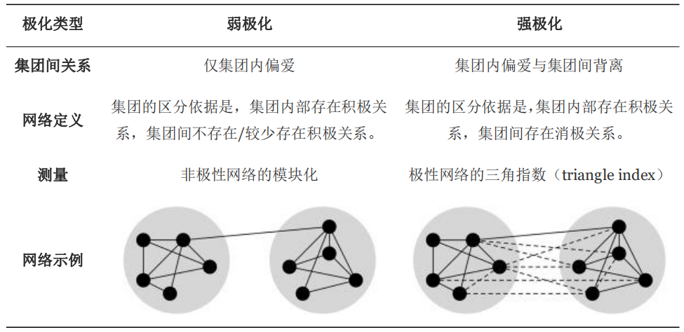
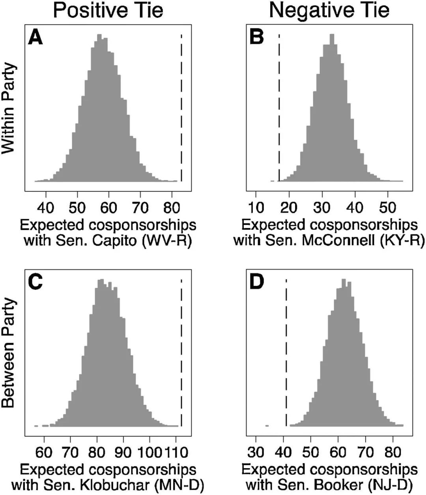
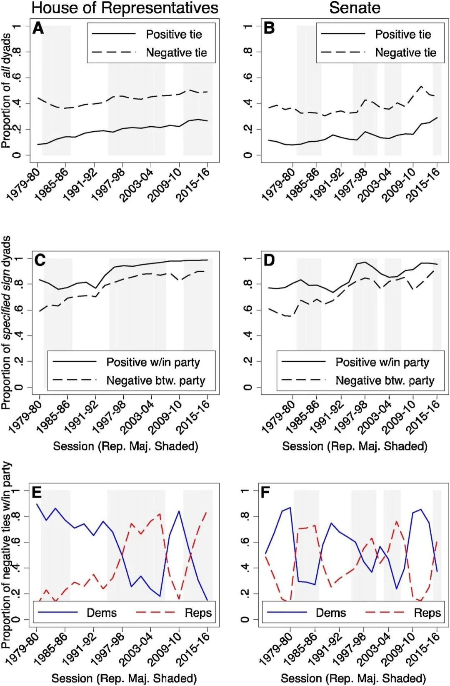
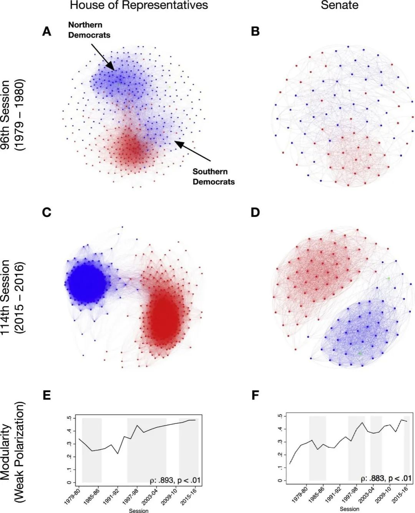
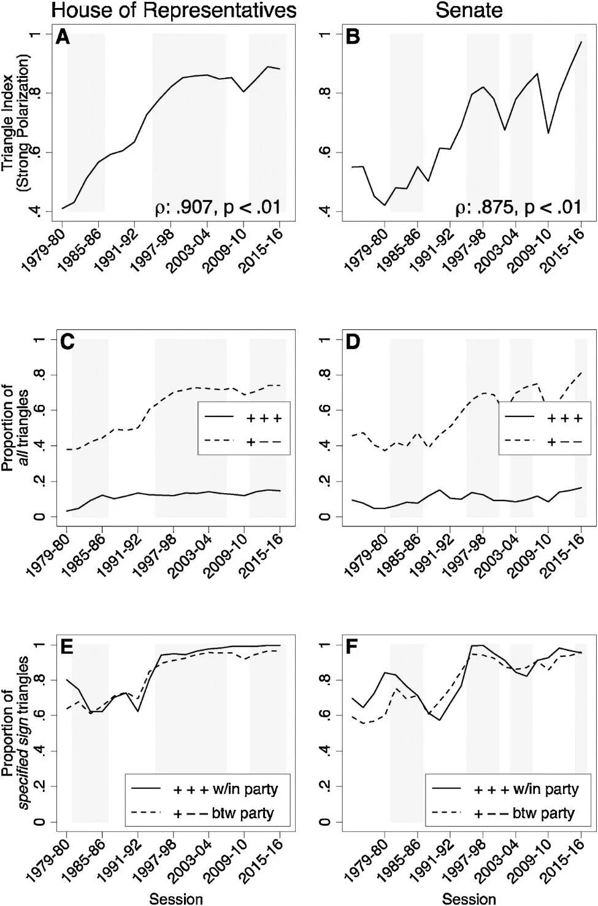

收录于合集

作品简介
【作者】 扎卡里·尼尔（Zachary Neal），密歇根州立大学心理学系副教授，研究方向包括网络科学、城市研究、政治极化等。
【编译】 李博轩（国政学人编译员，北京大学国际关系学院博士生）
【校对】 戴赟
【审核】 卫艺璇
【排版】 黄婷婷
【美编 】马颖
【来源】 Zachary Neal(2020). A sign of the times? Weak and strong polarization in the US Congress, 1973–2016. Social Networks , 60(1), 103-112.
期刊简介
《社会网络》（Social Networks）是一本跨学科的期刊，为人类学、社会学、历史学、政治学、经济学、生物学等学科提供了一个平台，供学者以网络形式分析社会关系和社会结构，讨论网络分析相关的理论和方法论。它发刊于1979年，由爱思唯尔（Elsevier）出版，每年四期。根据Journal Citation Reports显示，其2019年影响力因子为2.376，在社会学类SSCI期刊中排名28/150，人类学类SSCI期刊中排名15/91。
时代的标志？
美国国会1973-2016年的强极化和弱极化
A sign of the times?
Weak and strong polarization in the US Congress
Zachary Neal
文章导读
美国国会正日益极化的说法很普遍，但什么是极化？本文利用群体间关系的概念来区分强极化和弱极化。其中，弱极化是指极化集团之间不存在明显关系；而强极化是指极化集团之间存在负面关系。作者应用随机度序列模型对美国众议院和参议院1973年（第93届）至2016年（第114届）的共同提案行为进行分析，得到议员的政治关系网络，并以此回答两个研究问题。首先，当使用统计模型推断积极的政治关系存在时，美国国会中被广泛报道的弱极化加剧的结论能否被复制？其次，在美国国会中出现的极化是弱极化，还是强极化？作者发现参众两院都表现出程度日益增加的弱极化和强极化，而这一现象是政党从属关系导致的。同时本研究也发现，这些趋势与哪个政党在参/众议院占多数无关。
01
什么是极化？
极化（polarization）是一个广义的概念，指的是一个或多个特征不同但又可区别的集团的存在或形成过程。政治的极化重点是政治意识形态的分化，在美国，这种分化与政党的从属关系相关联，因此常被描述为党派极化或党派偏见。对政治极化，通常区分为选民中出现的群众极化（mass polarization）和政客中出现的精英极化（elite polarization）。本文关注精英极化的一种具体形式，即议员的极化。议员是重要的政治行为体，因为他们是选民的政治代表，对法律的制定负有直接责任。政治学研究中衡量立法极化最广泛使用的方法是使用意识形态得分（如DW- NOMINATE），根据投票模式将议员置于一个连续的自由- 保守光谱之中。这种方法为每位议员提供一个分数，操作简单并具有很强的解释力，但无法直接捕捉极化的关系本质。因此，人们的注意力转向了对议员网络极化的研究。
为了更好地理解立法过程，研究者花了大量的精力研究议员网络，因为辨别一个政客的真实立场和政治关系是很有挑战性的。绝大多数的相关研究都是基于议员的共同行为来构建网络，这些行为包括共同提案、投票一致性、委员会所属以及共同出席活动等。这些研究发现，议员形成了不同的集团，这些集团内部被积极的关系联系在一起，并通过集团间相对较少的积极关系而相互区别。研究者假定这就是极化的定义，并将观察到的结果作为极化的依据。
02
**
**
集团内关系与极化类型

见上表左栏，议员集团的区别在于群体内部是否存在积极关系，以及群体间是否存在积极关系。例如，在党派极化的典型案例中，当同一政党的成员合作，而不同政党的成员不合作时，就会出现这种结构。本文将这种形式的极化称为弱极化，一方面因为这种结构没有表现出消极关系，另一方面因为这种极化的程度会因为一些新的积极关系的形成而减弱。一些新的政党间在立法机构方面的合作可以将一个弱极化的立法机构转变为一个极化不明显的立法机构。因此，这种方法可能存在问题。
在社会心理学研究中，偏见会产生于个体对相似个体的吸引和对不同个体的排斥。先前的研究更少关注后者，可能是因为集团间的互动很少极端到包含可以观察到消极关系的水平。而在立法网络中，议员间消极关系较高的测量难度也是重要原因。
但议员间确实存在消极关系。它们可能发生在政治反对的情况下，多见于国会多数党和少数党领袖谈论对方立法议程的表述中。例如，参议院多数党领袖米奇·麦康奈尔（Mitch McConnel）和少数党领袖查克·舒默（Chuck Schumer）被认为是“在一个信任和联系至关重要的机构中几乎没有建立融洽的关系。他们主要是发动政治攻击，有时是人身攻击。”即使是同一政党的议员，在主张同一议案的不同版本时，也会出现这种情况。如果不注重消极关系，对立法网络和极化的研究可能会缺失什么？
当消极关系存在并被测量到时，我们可以观察到上表右栏所示的模式。在这种情况下，集团的区别不仅仅是因为集团间没有积极的关系，也是因为集团间存在消极的关系，本研究将这种形式的极化称为强极化。在强极化模式下，极化网络的极化程度是很难减弱的。例如，在党派背景下，消除或减弱分化急需要消除政党间的消极关系，也需要形成政党间的积极关系，而相关的研究表明，这并不容易做到。那么，目前观察到的美国国会日益增长的极化是弱极化，还是强极化？
平衡理论为这种结构的形成提供了一个潜在的解释，并明确地将社会心理学与网络方法联系起来。平衡理论认为，在三个个体构成的三对关系（三点组）中，当三对关系都是积极的（即+++，他们都是朋友），或一对关系是积极的、两对关系是消极的（即-+-，一对朋友面临共同的敌人）时，系统是平衡且稳定的。反之，当一对关系是消极的，两对关系是积极的（即+-+）和三对关系都是消极的（即—）时，系统是不平衡和不稳定的，并且随着时间的推移，其中一对关系会发生改变，以解决这种不平衡的状态。例如，在一个不稳定的+-+关系中，我的两个朋友互相不喜欢，我可以与其中一个朋友结盟，联合起来敌对另一个朋友，那这个关系将变为-+-的平衡状态。一系列网络研究证明，当不平衡的三点组转变为平衡的三点组时，社会将趋向于强极化的状态。极端情况下，这将包括两个互斥的子集，积极关系只存在于同一子集的两点间，而消极关系只存在于不同子集的两点间。因此，平衡理论也意味着集团的形成，其特征是成员之间的积极和消极关系。
03
基于共同提案的积极关系和消极关系
政客们可能出于各种原因隐瞒或歪曲他们的真实政治关系，这使得议员网络的数据难以通过直接报告进行收集。部分研究将重点放在议员的委员会共同成员身份上，以推断在同一委员会任职的两名议员之间存在政治关系。但由于委员会也可能受到包括资历在内的非意识形态因素的驱动，因此这可能无法完全解释议员间的政治关系。另有一些研究关注投票行为的相似性，假设如果两名议员投票行为相似，那么他们会有共同的政治观点。这一策略依赖议员对其政治观点的外在表达，是有价值的，但也存在选择偏差的风险，因为议员只对一小部分进入表决流程的议案投票。例如，在1973-1974年，两院议员共提出26222项法案，但只有2%（562项）得到表决；而在2015-2016年，这一数字仅略升至5%（10334项法案中的661项）。
间接推断议员关系的最常见策略是基于其共同提案的数据。在美国国会两院，一项立法是由作为“提案人”的议员提出的，同院的其他议员可以通过共同提案的方式表达对该立法的支持。这些数据比委员会成员或共同投票更有用，因为它们存在于所有提案中，并且是每个议员自己的立法议程的明确表达。
美国国会共同提案的几个细节使得我们需要对数据的使用作提前说明。首先，应该考虑哪一时段的国会会议？由于1979-1980年之前，众议院的一项提案最多只可由25名议员共同参与，因此本文研究参议院1973年至今和众议院1979年至今的共同提案数据；第二，应该考虑哪些类型的立法？在国会可以提出的四种立法类型中，只有法案（bills）和联合决议（joint resolutions）具有法律效力，因此本研究只考虑这两种类型；第三，是否应该区分提案人和共同提案人？一项提案的发起人只是众多议员中第一个真正负责将其提交审议的人，不一定是立法起草者，因此本研究忽略了二者之间的区别，统一使用“共同提案人”的表述。
通过共同提案推断政治关系的最后一个关键问题是：两位议员必须共同提案多少项，才能推断他们之间有积极（或消极）关系？
最常见的方法是采用一个普遍的阈值（通常为零），在两位议员的共同提案数量超过阈值时将其定义为有关系。但这一阈值下产生的网络必然是稠密且集聚的。同时，由于这种方法忽略了议员共同提案数量和一项法案得到的共同提案数量的差异，因此也很值得怀疑。更具体地说，如果两名议员经常共同提案，且他们的提案没有很大争议并得到其他议员的广泛支持，那么就不必推断他们之间有关系；相反，如果两名议员鲜有共同提案，提案有争议且支持者很少，那么这种共同提案行为就很值得关注了。
为避免这些问题，本研究使用随机度序列模型（Stochastic Degree Sequence Model），这是一种基于边权重条件概率分布推断二部投影关系的通用框架。在这一模型下，两位议员的共同提案会产生两位议员可能共同提案的法案数量分布，而两位议员共同提案的法案数量大致相同，且法案获得的共同提案数量也大致相同。这一分布代表一个议员随机进行共同提案时共同提案的预期数量。随后，将一对议员的联合提案数量与经验推导的零假设下样本分布进行比较，并据此判断边的统计显著性。当两位议员共同提案明显多于零假设下的预期，则双方存在积极关系；相反，当两位议员共同提案明显少于零假设下的预期，则双方存在消极关系。

图1
图1使用参议院苏珊·柯林斯（Susan Collins）在2015-2016年国会中的例子来说明。图中显示的是两位立法委员共同提案的条件分布，虚线则标示实际的共同提案数目。图1A显示，柯林斯与参议员卡皮托（Capito） 的共同提案多于预期，表明他们之间存在积极关系，而这与他们的DW-NOMINATE意识形态分数一致（Collins = 0.106，Capito = 0.255）。同样地，柯林斯与参议员麦康奈尔（McConnell）的共同提案数少于预期，表明他们之间有消极的政治关系，这也与符合麦康奈尔的意识形态分数（0.404）。在柯林斯与民主党籍参议员的关系中也可以看到类似的模式，即其与克洛布彻（Klobuchar）有积极的关系，同布克（Booker）有消极的关系。这些例子表明，这一方法所确定的积极和消极关系不必然与党派所属关联，且推断积极或消极关系存在所需的共同提案数对每一对议员都是独一无二的。
根据图论，当无极性网络的积极关系在集团内部而非集团间时，就会出现弱极化。因此，先前的研究通常使用模块化系数（index of modularity）衡量极化程度。而强极化发生在积极关系发生在集团内部，消极关系发生在集团间时，不能用传统的模块化来衡量。本研究使用了Cartwright和Harary（1956）对平衡图的定义，通过三角指数（triangle index），即通过网络中所有平衡的三点组占所有可能的三点组的比例测量网络整体的极化水平。
04
积极关系与消极关系的二元趋势

图2
具体分析极化之前，首先考虑积极关系和消极关系的二元趋势是有帮助的。图2的A和B显示了国会两院积极关系和消极关系的比例随时间的变化。阴影部分表示共和党控制议院，非阴影部分表示民主党控制议院。两院的趋势明显且一致：首先，消极关系是积极关系的两倍多，这是令人惊讶的，因为在大多数社会心理学研究中，偏爱比背离更为常见；其次，这两种关系正变得越来越普遍，这表明议员通过参与共同提案，越来越多地“选择一方”。有趣的是，这些趋势与哪个政党占多数无关。
图2的C和D将这些趋势按议员的政党关系进行分解，说明来自同一政党的议员之间发生积极关系的比例（实线），以及不同党派的议员之间出现的消极关系的比例（虚线）。考虑到政党推动具体议程的目的，大多数积极关系发生在党内，大多数消极关系发生在政党之间，这也许并不奇怪。但这一现象的完整度是惊人的。2015-2016年间，众议院98.8%的积极关系发生在同一政党的议员之间，而只有1.2%的积极关系发生在共和党和民主党之间。同样，近90%的消极关系在不同政党的议员间产生。这些模式说明了两党制的转变，而两党制又与哪个政党控制众议院无关。
然而，这掩盖了一个微妙的最终趋势。图2的E和F进一步分解了这一趋势，说明了两个民主党议员（实线）或两个共和党议员（虚线）之间发生的党内消极关系的比例。此处，一个政党多数地位的影响得以显现。参议院1973年至今和众议院1993年至今，党内的消极关系主要发生在多数党议员之间。少数党议员团结一致，“互通有无”（stay on message），而多数党议员则通过党内派系的形成，探索提出具体议程的机会。这一发现反映了Kirkland和Slapin（2017）的观察，即“意识形态极端的议员在其所属政党控制多数席位时，对政党的忠诚明显降低”。一个政党保持多数控制权，为多数党内部的派系提供了发展和巩固的机会。在图2的E和F中可以看到，多数党内部消极关系的比例通常会随着多数党控制下的国会届次的增加而增加，并在其多数地位结束时达到最高水平。一个政党占多数的时间够长，可能会为政党的分裂埋下伏笔，但在实践中，这并没有发生，也许是因为在这一研究期间，没有一个政党能够长期占据多数。相反，这种“战略上的不忠诚”似乎阻止了多数党对议程的推进，即使其控制了多数议席。例如，1995-2006年，共和党控制众议院。在此期间，共和党议员间负面关系增加，占众议院负面关系的绝大多数。而2006年控制多数党地位的最后一届国会也由于无法通过立法，被媒体称作“无所事事的国会”。
05
强极化与弱极化

图3
为分析美国国会中存在的弱极化情况，图3展示了1979-1980年国会（A和B）与2015-2016年国会（C和D）的仅积极关系的网络图比较。图中，民主党议员标为蓝色节点，共和党为红色节点，独立派议员以绿色节点标示。代表积极关系的边为两个节点颜色的组合，民主党议员之间由蓝色边连接，共和党议员间为红色，而民主党与共和党议员之间以紫色边连接。
1979-1980年的国会，参众两院都能看到一些弱极化的现象。在图3的A和B中可以看到共和党和民主党分别在网络的底部和顶部聚集，但两党间的分离趋势并不明显，极化程度较弱。此外，虽然政党发挥影响，但此时的弱极化并不是严格按照党派划分。例如在众议院，民主党存在两个派系，来自北部各州的民主党议员在顶部出现了一个密集的集群，而来自南方各州的民主党议员则在底部聚集，并与共和党议员关系密切。到了2015-2016年的国会中，参众两院的弱极化已经变得相当极端和党派化。在图3的C和D中，大部分共和党议员只同其他共和党人保持积极关系，民主党也一样。
图3的E和F使用模块化方式量化了这些网络中存在的弱极化程度，测量政党内部而非政党间存在关系的程度。将模块化系数与时间变量进行斯皮尔曼相关（spearman correlation）后我们发现，与先前的研究一致，两院均呈现出显著的弱极化随时间增加的特征，两院目前面临近50年来最高的极化水平。（众议院：ρ = 0.893，参议院：ρ = 0.883；p < 0.01）

图4
我们也可以在极性网络（同时存在积极关系和消极关系的网络）中看到强极化，但这样的网络关系过于密集，无法有效地通过图来表现。因此，在图4的A和B中，研究使用上文提到的三角指数（triangle index）量化强极化程度。三角指数与时间变量的斯皮尔曼相关表明，无论哪一个政党占多数，两院的强极化水平都有统计意义上的显著增加。（众议院：ρ = 0.907，参议院：ρ = 0.875；p < 0.01）
为什么国会的极化越来越强烈？我们可以把平衡三点组分为两类（即+++和-+-）来分析。如图4的C和D所示，网络强极化水平的增加几乎都可以归因于-+-三点组的增长。事实上，虽然自20世纪70年代以来+++三点组的比例（实线）保持不变，但同时-+-三点组的比例（虚线）增加了50%以上。此外，如图4的E和F所示，三点组结构与政党关系密切相关。越来越多的+++三点组出现在三个同一党派的议员中，巩固了党内凝聚力。与此相对，越来越多的-+-三点组出现在不同党派的议员间，正是这些三点组巩固了强极化的集团间的背离属性。
06
时代的标志？
政治上的极化长期以来一直是政治学研究的重要问题。在本文中，作者着重探讨了议员间关系的性质，以区分、衡量和记录美国国会中两种不同的极化形式。本研究旨在回答两个相关的研究问题。
首先，当使用统计模型推断积极的政治关系存在时，美国国会中被广泛报道的弱极化加剧的结论能否被复制？使用随机度序列模型，我们发现参议院和众议院都存在从80年代初至今持续强化的弱极化趋势。这一点与先前的研究一致。
其次，在美国国会中出现的极化是弱极化，还是强极化？研究发现，参众两院自80年代起强极化水平有显著且持续的增长，并在2015-2016年的国会中达到顶点。此前的研究只关注美国国会日益严重的弱极化，但目前愈演愈烈的极化事实上是一种强极化的形式。+++三点组的形成增加了党内凝聚力，但相比之下-+-三点组的发展更快，并强化了两党对立。
在研究涉及的整个时段，参众两院的控制权发生了多次转移，但极化与哪个政党占多数没有直接联系。也就是说，两党唯一的共同点就是推动更强的极化。有一个例外需要进一步研究：党内的消极关系在多数党中更为普遍。这些多数党内部的消极关系，如果在很长一段时间内发挥作用，可能会导致政党的分裂，但短期内可能只会妨碍多数党推进其议程的能力。
如果在立法环境中，不平衡和集团间建立积极关系不太可能实现，那么不断增加的平衡性和极化水平对立法有何影响？这是一个复杂的问题，不是仅仅分析共同提案就能解决的。然而，上述的一些研究结果给出了可能的答案。一个以强烈的党派极化为特征的国会正在形成，严重制约了妥协，因为每一个政党都认为对方不仅有一个不同的立法议程，而且还是己方立法议程的反对者。此外，虽然权力平衡偶尔从一个政党转移到另一个政党，但随着每一次转移，新的多数党都会推行自己的立法议程，与另一个政党的议程背道而驰。强烈的极化降低了两党妥协和合作的可能性，而立法和政策会在下一次政权轮替时逆转。因此，在两党制下，强烈极化对立法的威胁可能不是执行极端政策，而是从一个党派极端政策到另一个党派极端政策的剧烈波动，阻碍任何政策的长期实行。
（感谢学者Zachary Neal对本文编译的支持）
文章观点不代表本平台观点，本平台评译分享的文章均出于专业学习之用, 不以任何盈利为目的，内容主要呈现对原文的介绍，原文内容请通过各高校购买的数据库自行下载。
**
**
**
**
**
**
添加 “国小政”微信
获取最新资讯


国政学人
支持学术公益与知识传播
微信扫一扫赞赏作者 __赞赏
已喜欢，对作者说句悄悄话
取消 __
发送给作者
发送
最多40字，当前共字
上一页 1/3 下一页
长按二维码向我转账
支持学术公益与知识传播
受苹果公司新规定影响，微信 iOS 版的赞赏功能被关闭，可通过二维码转账支持公众号。